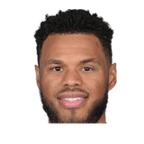

Sirius XM NBA:Justin Anderson on Rick Carlisle giving him playing time:
“He saw I was always ready to play within the system. He saw my approach in practice.”
Justin Anderson on Rick CarlisleTwitter @SiriusXMNBA

Justin Anderson on Rick Carlisle, and Rick Carlisle on Justin Anderson: every quote in the archive, newest first. Each one links to its original source.
Sirius XM NBA:Justin Anderson on Rick Carlisle giving him playing time:
“He saw I was always ready to play within the system. He saw my approach in practice.”
Tim MacMahon:Rick Carlisle on why rookie Justin Anderson, who started all 6 games during Dallas' recent winning streak, played only 6 minutes through the third quarter of Game 1:
“We were playing veterans. We played veterans predominantly in the Utah game, which was the biggest game of the year. He's obviously got to be more involved going forward. I like the way he finished the game. It's a situation now where we've got to get as many healthy bodies available, and he'll be a big part of it, no question about it.”